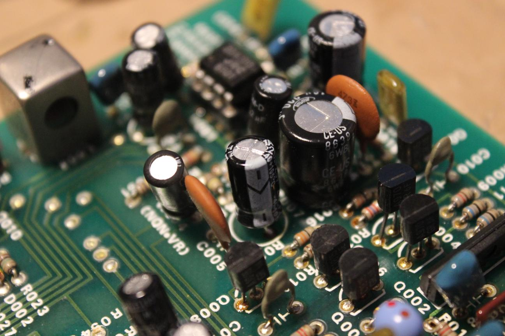

Tascam 48
The owner of this machine had problems getting it to record on several channels. I threaded some tape to test it out but when the machine was playing, I noticed that the tape, the tension arm, and the takeup reel had all developed a layer of sticky tar on them. The pinch roller and tape counter roller had started to melt! They were falling apart as the tape passed over them. I cut the tape off the reel and removed what was left of the rollers to send off for resurfacing.
I sent the rollers off to
Terry Witt
for resurfacing and started cleaning the tar out of the transport mechanism.
The rollers came back looking brand new.
The machine recorded on half of the channels when I tested it. I decided to switch the amplifier cards around to see where the problem was.
Switching the cards around fixed all but one of the dead channels. The problem was most likely oxidation so I cleaned the contacts on the card slots. Channel 5 still had no output so I removed the channel card for a closer look.
The first thing I noticed was discoloration around this 100Ω resistor. It's a dropping resistor for the -15V supply and it looked like it was getting hot. The solder also looked very thin and not consistant with the other joints.
The insulation on the leads looked like it had been replaced or had been discolored from the heat that it was experiencing.
Its a higher wattage resistor and it tested fine so I returned it to the board with some fresh solder.
I added some new insulation on the leads too. I knew that something downstream from this resistor had to be shorted out so I began checking the components that it supplies current to.
I removed two amplifier IC's to test them but they tested fine. I installed sockets in the board to make removal and testing easier in the future.
Next, I looked at the filter caps on the -15V line. The short I was looking for was found in a 220μF filter cap.
I replaced it with a cap of the same value and a higher voltage rating.

The cap in place
Final testing. All channels are in business.